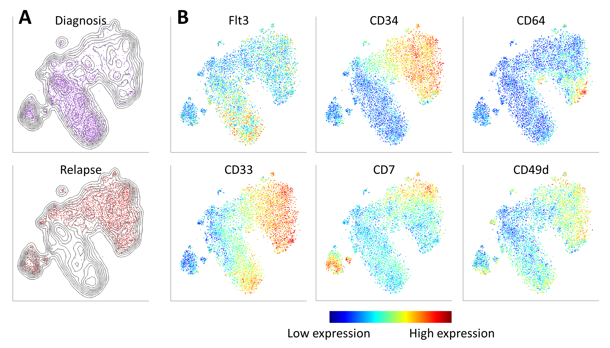

|
|
ViSNE |
| New high-dimensional, single-cell technologies offer unprecedented resolution in the analysis of heterogeneous tissues. However, because these technologies can measure dozens of parameters simultaneously in individual cells, data interpretation can be challenging. Here we present viSNE, a tool that allows one to map high-dimensional cytometry data onto two dimensions, yet conserve the high-dimensional structure of the data. viSNE plots individual cells in a visual similar to a scatter plot, while using all pairwise distances in high dimension to determine each cell's location in the plot. We integrated mass cytometry with viSNE to map healthy and cancerous bone marrow samples. Healthy bone marrow automatically maps into a consistent shape, whereas leukemia samples map into malformed shapes that are distinct from healthy bone marrow and from each other. We also use viSNE and mass cytometry to compare leukemia diagnosis and relapse samples, and to identify a rare leukemia population reminiscent of minimal residual disease. viSNE can be applied to any multi-dimensional single-cell technology.
|
If you use ViSNE or it's associated tool, CYT, for your publication, please cite the following article:
Amir E.D, Davis K.L., Tadmor M.D., Simonds E.F., Levine J.H., Bendall S.C., Shenfeld D.K., Krishnaswamy S., Nolan G.P., Pe'er D. viSNE enables visualization of high dimensional single-cell data and reveals phenotypic heterogeneity of leukemia, Nature Biotech. 2013.
|
You can download the data included in the paper here.
To generate and visualize viSNE maps, download the associated matlab based tool, CYT, here. These instructions explain how to run viSNE from within CYT. |
|